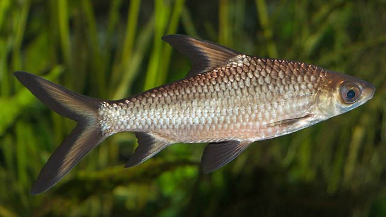

物理5–11 岁约 10 分钟
撑稳了走上岸，只会游困在洼？
同一只纸弹涂鱼。撑稳了，胸鳍走上泥滩；只会游，困在水洼。差在撑不撑，不在换了一只会跳的，也不在只会游。本页不抓真鱼，观察后洗手。
同一只纸弹涂鱼，撑走一回，只会游一回


撑稳了走上岸。只会游困在洼。先点「撑走」，再点「试一试」。
先猜一猜，再试
第 1 题：撑 80，胸鳍撑住了，走得上泥吗？
押一个。把撑走调到 80，再点试一试。
第 2 题：撑 10，只会游，还走得上泥吗？
押好后撑 10，再试一试。
第 3 题：撑 50，才撑一半，算走上泥吗？
押好后撑 50，再试一试。
同一只纸弹涂鱼：撑稳了走上岸；只会游困在洼
先点「撑走」再点「试一试」，看胸鳍走上泥滩。再点「只会游」试一次，看是不是困在水洼。
纸弹涂鱼始终是同一只。差在撑不撑，不在换了一只会跳的，也不在只会游。撑稳了才上岸，只会游就困在洼。
舞台上的「上岸」是本页比较尺子：撑走 ≥ 80 才算撑得住。撑走 50 还不够。不抓真鱼，观察后洗手。本页用纸板。
泥走图鉴
点一张，对照舞台：谁让撑稳了走上岸，谁让只会游困在洼。
点一张图鉴，对照为什么撑稳了才走上岸。
猜一猜
同一只纸弹涂鱼要走上泥滩，靠的是撑走，还是只会游？
先押一个，再点「看答案」。
任务：撑走和只会游都试
先把撑走调到 80 或更高试一次，再调到 20 或更低试一次。两头都点过「试一试」即可完成。
开放式提示不会代替上面的正式任务。
尚未完成：先撑走试一次，或只会游试一次。
同一只纸弹涂鱼，先撑走试一次，再只会游试一次
舞台上只改一件事：撑得有多稳。同一只纸弹涂鱼、同一片泥，先撑走试一次，看走不走上岸；再只会游试一次，看是不是困在水洼。这样比，才知道上岸靠的是撑，不是「后腿跳」，也不是「只会游」。
回家只带两句：「撑稳了才走上岸」；「只会游困在洼」。不要写成「只会游也能上岸」。
撑稳了，台上才走上泥滩，不是谁后腿更弹。
只会游以后台上困在水洼。

它不是青蛙；本页比撑不撑，两句不要并成一句。
不抓、不捞，本页用纸板对照。
这在教什么：孩子要能对撑走和只会游各报上岸或困洼，并否定「后腿跳」和「只会游就行」。
- 撑走那一次，走上泥滩了吗？
- 只会游，台上还走得上泥吗？
- 本页要比青蛙后腿跳吗？
- 能去抓真鱼、捞泥里的鱼吗？
上岸靠撑走，不是后腿跳，更不要去抓真鱼
撑稳了，胸鳍才走上泥，身子才上岸。身子只在够撑时，这一走才成立。只会游，眼前就困在洼。
不要把它讲成「只会游也能上岸」或「后腿一跳就行」。青蛙跳是另一笔账。普通鱼划水也不是这一页。
不抓真鱼，不捞。看完按二十秒洗手。本页用纸板。
给家长的问题
- 撑走那一次，孩子指的是胸鳍和泥，还是在说「它比较勤快」？让他再指一次鳍和困在洼里的身子。
- 只会游，为什么走不上岸？哪一句四岁听得懂？
- 如果他说「后腿一跳就不用撑」——跳是哪一笔账？本页少的是鳍还是腿？
- 青蛙跳和弹涂鱼走，差在「后腿蹬」还是「胸鳍撑」？
- 不抓、不捞、看完洗手：红线怎么说？本页能当抓鱼游戏吗？
背后的原理
舞台上不写这些词，留给孩子用眼睛看。胸鳍当拐杖撑在泥上。本页用撑走 ≥ 80 当门槛，撑走 50 还不够，不算上岸。
这不是青蛙跳的说明书，也不是普通鱼的划水。青蛙另开一页，鱼页另开，都不要并进本页第一完成句。
人去抓真鱼有滑倒和伤鱼风险。观察后洗手。舞台用纸板。
接下来可以去
带走句：撑稳了才走上岸；只会游困在洼。弹涂鱼观察站看真胸鳍；青蛙页对照后腿跳。